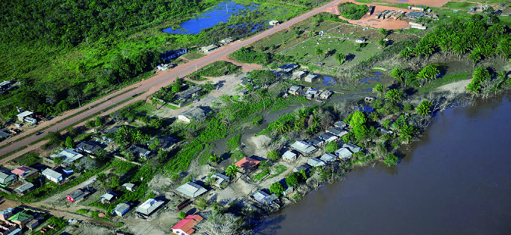

DE ACORDO COM AS INFORMAÇÕES APRESENTADAS NO TRECHO DA REPORTAGEM, RESPONDA:
CRUZ, JAÍNE QUELE. UM CAMINHO PELO MADEIRA ATÉ A INVISIBILIDADE SOCIAL: RIBEIRINHOS VIVEM SEM ÁGUA TRATADA MESMO ÀS MARGENS DE UM DOS MAIORES RIOS DO BRASIL. G1, RONDÔNIA, 6 MAIO 2023. DISPONÍVEL EM: https://g1.globo.com/ro/rondonia/noticia/2023/03/06/um-caminho-pelo-madeira-ate-a-invisibilidade-social-ribeirinhos-vivem-sem-agua-tratada-mesmo-as-margens-de-um-dos-maiores-rios-do-brasil.ghtml. ACESSO EM: 9 ABR. 2024.
QUE SOFREM COM O PROBLEMA DA FALTA DE ÁGUA TRATADA.
OS RIBEIRINHOS PRECISAM ADOTAR MÉTODOS PRÓPRIOS DE SOBREVIVÊNCIA, COMO APROVEITAR A CHUVA OU SE LOCOMOVER ATÉ REGIÕES PRÓXIMAS – COM GALÕES – PARA BUSCAR ÁGUA, SEMPRE QUE PRECISAM.
[...]

Mario Friedlander
VISTA AÉREA DO DISTRITO DE ABUNÃ, SITUADO À MARGEM DO RIO MADEIRA, EM PORTO VELHO, RONDÔNIA.
FOTOGRAFIA DE 2014.
1)
QUAL MENSAGEM O TÍTULO DA MATÉRIA TRANSMITE SOBRE A SITUAÇÃO DO SANEAMENTO BÁSICO NAS COMUNIDADES RIBEIRINHAS DE PORTO VELHO?
O título sugere que a situação precária nessas áreas contribui para a invisibilidade social das populações ribeirinhas.
2)
QUAL É O PRINCIPAL PROBLEMA ENFRENTADO PELAS COMUNIDADES RIBEIRINHAS DE PORTO VELHO?
A falta de acesso à água tratada.
SUGESTÃO PARA O PROFESSOR
Para compreender as principais ameaças aos ribeirinhos sugerimos projetar para os estudantes o vídeo Gado, madeira e violência ameaçam ribeirinhos do rio Madeira, no sul do Amazonas (disponivel em: https://www.youtube.com/watch?v=7jZRyDUFRvQ, acesso em: 22 maio 2024).
É possível conhecer o “novo arco do desmatamento” na Amazônia.
O avanço da pecuária e da madeira impulsionam a destruição da floresta – e rápido.